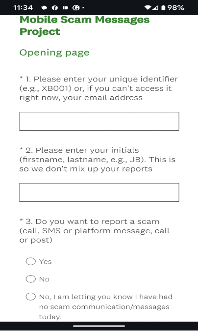
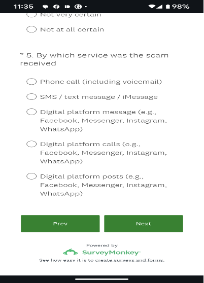
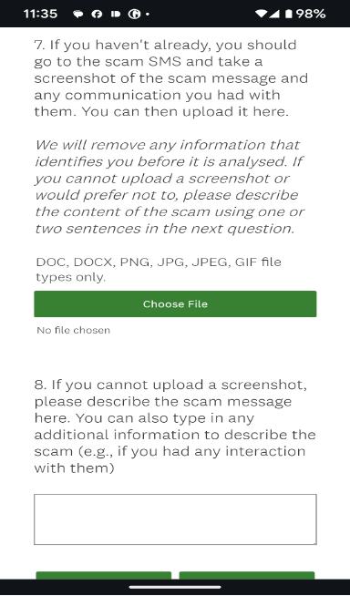
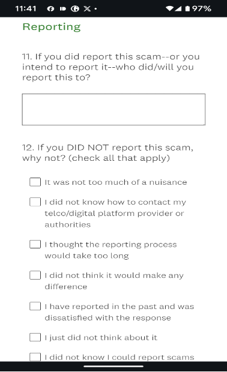
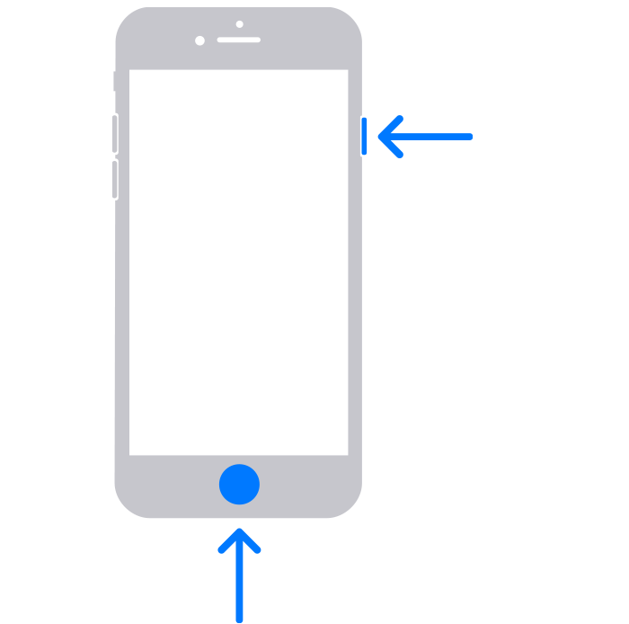
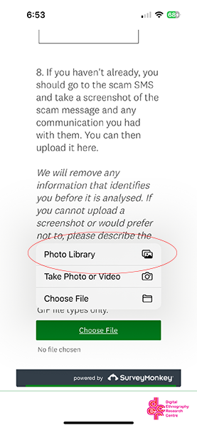
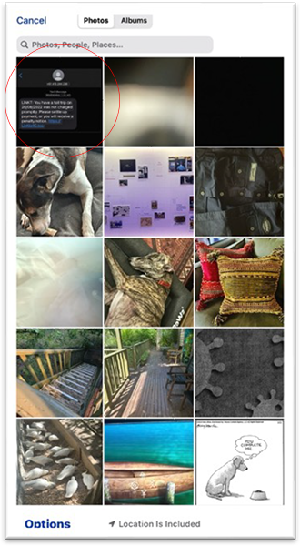
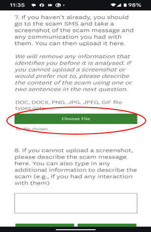
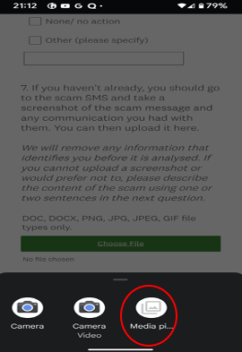

You can install this app!
HOW TO INSTALL?
×
Instructions
I'm a new participant. What do I need to do?There are three things for you to do:
1. Fill out the consent form which we need to start you off. This should take about 2-3 minutes. You can access the consent form by clicking here.
2. Check out the study instructions below.
3. Each time you receive a scam call or message, open the Scam Study app and report the scam to us.
Thanks so much for joining this study, we really hope your participation will help us to reduce the number of scam calls and messages Australians are getting.
To make it easy for you, we have an app that you can install. This app will give you an easy to use button on your phone to press every time you receive a scam call or message. The app is very secure, and it will never take any data from your phone that you don’t enter into the app.
To download and install, follow these steps:
• On your smartphone go to https://www.mobilescamproject.com.au/
• Click the install button (top of the page, yellow bar) for instructions.
- For ANDROID phones, look for the “More” menu. This is the “three dots” menu in Chrome but could be different depending on your browser. Next, select “Add to Home Screen,” and then follow the prompts.
- For APPLE / iOS phones, look for the share button in Safari, select “Add to Home Screen,” and then follow the prompts.
If for any reason you cannot install the app, please visit the link above to inform us of any scam communication you receive.
Each time you receive a call or message you think may be a scam, we would like you to fill out a few short details by opening the app or clicking on the secure link we have sent to you as a text/SMS.
The interface asks a few brief questions, and should take no more than two minutes to complete.
First step
Please enter your unique identifier we have sent you by SMS. This helps us to match your scam experiences with the survey data you’ve already provided, so we can better map where and when people are targeted.
Please also enter your initials. This is so we can error-check against any typo in the unique identifier and to help you with any technical issues that may arise.
What would you like to do? Finally, we ask if you want to report a scam call/message.
- Yes: will take you to the reporting page
- No: will end the report
If you remember, it’s helpful to let us know at the end of each day if you haven’t had any scam messages, that way we can better track the days when people are most targeted. Hit “No I am letting you know I have had no scam today” and that will end the questions for the day.
Second step
Firstly, we will ask how certain you are that the call/message you received was a scam.
Secondly, we ask what service the scam came through on
- Phone (including voicemail)
- SMS (text message)
- Digital platform message (e.g., Messenger, Instagram)
- Digital platform call (e.g. Messenger, Whatsapp)
- Digital platform post (e.g. Facebook, Instagram)
This will direct the interface to the right set of questions, which will then take about 1 more minute to complete.
Third step
Here we ask some details about the scam communication and ask you to upload a screenshot. See the question below for how to do that on Android phones or on iOS phones. The process is very simple.
Alternatively, if you do not wish to upload a screenshot (or if the scam was a call) you can provide some details about what the scam was about in the box at the bottom of the page.
Fourth step
Finally, we will ask a few very quick questions about:
(a) Where you have (or might) report the scam to authorities, banks etc.
(b) Three quick questions about your attitude to scams.
Each time you receive a message you think may be a scam, we would like you to upload a screenshot of the scam message and any responses you give. This may be a text message (SMS), a platform message (e.g., Facebook Messenger) or a platform post that appears on a social media feed.
How to take a screenshot on an iPhone with Face ID?
1. Press the Side button and the Volume up button at the same time.

2. Quickly release both buttons.
3. The screenshot will automatically be saved into your phone’s Photo Library.
How to take a screenshot on an iPhone with Touch ID?
1. Press the Side button and the Home button at the same time.
2. Quickly release both buttons.
3. The screenshot will automatically be saved into your phone’s Photo Library.
How do I upload the screenshot to the study?
1. When you get to Question 8 in the questionnaire, please press the green bar “Choose File”.

2. Select “Photo Library”. This will take you to the most recent photos in your Photo Library.
3. Select the screenshot of the scam message. It will upload automatically. Continue to the end of questionnaire.
Alternative step
If you are having trouble adding a screenshot – or you prefer not to add one – please use the next box (Question 9) to describe the scam communication. If you can cut-and-paste the message and add the phone number (if any) that would be very helpful.
Any information will help the study, and that will help us develop ways to reduce scam targeting in Australia.
Each time you receive a message you think may be a scam, we would like you to upload a screenshot of the scam message and any responses you give. This may be a text message (SMS), a platform message (e.g., Facebook Messenger) or a platform post that appears on a social media feed.
How do I take a screenshot?
1. Press the Power and Volume down buttons at the same time.
2. If that doesn't work, press and hold the Power button for a few seconds. Then tap Screenshot.
If neither of these work, go to your phone manufacturer's support site for help.
How do I upload the screenshot to the study?
1. When you get to the part of the questionnaire that asks about a screenshot, please press the green bar “Choose File”.
2. Select the option for "Media picture".
3. This will open a file menu (usually to your recent files list where you’ll see any recent screenshots). Here, you can select the right screenshot.
Be careful not to mistakenly select something which may identify you (but if you do, we will delete it from our records).
If the interface doesn’t show your screenshot then you may need to navigate using the buttons at the top or side to your “Screenshots” folder (which is sometimes contained inside the “Pictures” folder).
Alternative step
If you are having trouble adding a screenshot – or you prefer not to add one – please use the next box (Question 9) to describe the scam communication. If you can cut-and-paste the message and add the phone number (if any) that would be very helpful.
Any information will help the study, and that will help us develop ways to reduce scam targeting in Australia.
If you don’t receive any scam calls or messages on any particular day, we ask that you still go into the app and, on the opening page, select “I am letting you know I have had no scam communication/messages today.”
This will let us know you didn’t get any scam messages, and that you’re still engaged in the study so we can pay you.
After the completion of the study, you will be paid $80 in appreciation of your time and support.
Just after the 14-day study is complete, we will send you a link to a secure form where you can provide your bank details. RMIT University will then process the payment, which should take a further 7-14 days.
To make sure you’re eligible for payment, remember to submit the form every day, including the days in which you receive no scam communication, by clicking the “I am letting you know I have had no scam communication/messages today” button.
If you are having any technical issues, please fill in the brief form here and one of the team will be in touch by SMS or email, usually within 24 hours.
You can also email us with any questions at scam.study.2024@gmail.com
We hope no one will be scammed, but occasionally it does happen to the best of us.
If during the study (or at any time afterwards) you are concerned that you may have been scammed, we have some guidelines and advice for who to contact, attached here. You may wish to download this sheet and keep it as easy reference.